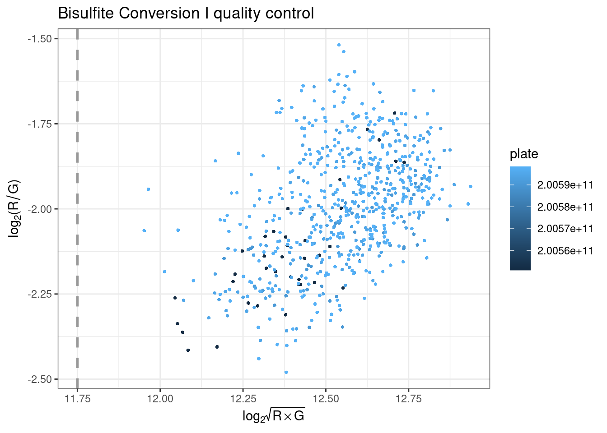
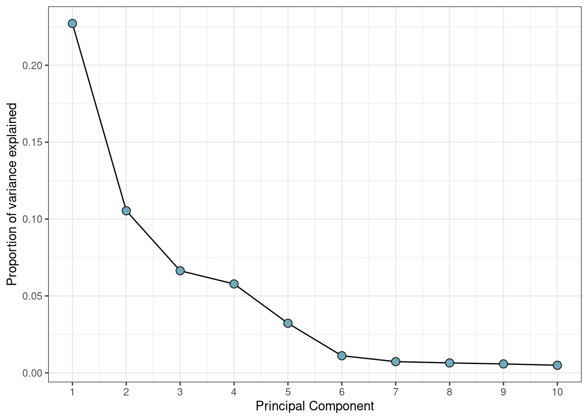

Loading DNAm data
Summarizing IDATs
The MethylAid10 package, which will be used for quality control in this workflow, requires the targets data frame to contain a Basename variable that points to IDAT file names. Sometimes, data comes with a sample sheet to facilitate this, but in this example the information is extracted from the supplementary file column instead.
## [1] "GSM3228562_200550980002_R01C01_Grn.idat"
## [2] "GSM3228563_200550980002_R02C01_Grn.idat"
## [3] "GSM3228564_200550980002_R03C01_Grn.idat"
## [4] "GSM3228565_200550980002_R04C01_Grn.idat"
## [5] "GSM3228566_200550980002_R05C01_Grn.idat"
## [6] "GSM3228567_200550980002_R06C01_Grn.idat"The following sample quality control steps will also require the BiocParallel package. Using parallel processing and/or batches will reduce both memory load and run-times when extracting intensities from IDAT files. Please see the MethylAid vignette for more details.
The available number of cores is set usnig MulticoreParam, and IDATs are summarized using the summarize function.
BPPARAM <- MulticoreParam(6)
sData <- MethylAid::summarize(targets, batchSize=50, base="../GSE116339/IDATs")Creating an RGset
In addition to the sData object, which is used by MethylAid, it is useful to also create an RGChannelSetExtended object, which contains more extensive information on the data. Here, we use read.metharray.exp() from minfi9 but, since this has not been updated for the more recent arrays, we advise monkey patching the internal .guessArrayTypes function, with the appropriate array and annotation.
.guessArrayTypes <- function(nProbes) {
if (nProbes > 850000) {
# EPIC v2 array
arrayAnnotation <- c(array = "IlluminaHumanMethylationEPIC", annotation = "20a1.hg38")
} else if (nProbes > 622000) {
# EPIC (850k) array
arrayAnnotation <- c(array = "IlluminaHumanMethylationEPIC", annotation = "ilm10b4.hg19")
} else if (nProbes > 480000) {
# 450k array
arrayAnnotation <- c(array = "IlluminaHumanMethylation450k", annotation = "ilmn12.hg19")
} else {
# 27k array
arrayAnnotation <- c(array = "IlluminaHumanMethylation27k", annotation = "ilmn12.hg19")
}
arrayAnnotation
}
environment(.guessArrayTypes) <- asNamespace("minfi")
assignInNamespace(".guessArrayTypes", .guessArrayTypes, ns = "minfi")Then, proceed using BiocParallel and minfi to read in the IDAT files.
Reading data in parallel is subject to errors and debugging is often difficult. Recently, BiocParallel has been extended with a comprehensive set of functions for debugging on various parallel architectures. If problems arise, we recommend using BatchJobsParam() with the log=TRUE option in order to facilitate resolution.
Our data is now an RGset object that can used for visualization. You can see below that inside this object the colData holds the same information as targets, and that there are 5 assay layers. The annotation information tells us that the methylation was measured using a EPIC array and that hg19 is the reference genome.
## class: RGChannelSetExtended
## dim: 1052641 679
## metadata(0):
## assays(5): Green Red GreenSD RedSD NBeads
## rownames(1052641): 1600101 1600111 ... 99810990 99810992
## rowData names(0):
## colnames(679): GSM3228562_200550980002_R01C01
## GSM3228563_200550980002_R02C01 ... GSM3229239_200598350080_R03C01
## GSM3229240_200594740075_R08C01
## colData names(14): sample_ID geo_accession ... Basename filenames
## Annotation
## array: IlluminaHumanMethylationEPIC
## annotation: 20a1.hg38Beta values
In order to further visualize the data, we store the beta values using the getBeta() function from minfi. The type="Illumina" option adds 100 to the denominator of the beta-value calculation, preventing NA values being recorded when the methylated and unmethylated signal are both 0.
On some environments, this function returns a list. In that case, the beta-values can be extracted using betas$completeObs.
It can also be advisable to round the beta values to 4 significant figures, which both reduces the data size and provides a realistic measure of the available precision.
Now, betas contains beta values for each measured probe and sample.
## [1] 866836 679## GSM3228562_200550980002_R01C01 GSM3228563_200550980002_R02C01
## cg18478105 0.0504 0.0000
## cg09835024 0.0745 0.1027
## cg14361672 0.6650 0.6541
## cg01763666 0.6506 0.6182
## cg12950382 0.8633 0.8001
## GSM3228564_200550980002_R03C01 GSM3228565_200550980002_R04C01
## cg18478105 0.0432 0.0396
## cg09835024 0.0548 0.0499
## cg14361672 0.6505 0.6050
## cg01763666 0.6523 0.6663
## cg12950382 0.8153 0.8313
## GSM3228566_200550980002_R05C01
## cg18478105 0.0454
## cg09835024 0.0750
## cg14361672 0.7440
## cg01763666 0.6309
## cg12950382 0.7643MethylAid
Control probes
MethylAid plots to visualize sample quality are included in the DNAmArray package and their use is outlined below.
They rely on the following qcProbes object that specifies the control probes.
qcProbes = list(
BSI = "^BISULFITE CONVERSION I$",
BSII = "^BISULFITE CONVERSION II$",
EC = "^EXTENSION$",
SPI = "^SPECIFICITY I$",
HYB = "^HYBRIDIZATION$",
NP = "^NON-POLYMORPHIC$",
SPII = "^SPECIFICITY II$",
TR = "^TARGET REMOVAL$",
SC = "^STAINING$",
NC = "^NEGATIVE$"
)They also rely on array specific thresholds, which we advise to set on the basis of the following table:
| Array | MU | OP | BS | HC | DP |
|---|---|---|---|---|---|
| 450k | 10.5 | 11.75 | 12.75 | 13.25 | 0.95 |
| EPIC | 10 | 12 | 11.75 | 12.75 | 0.95 |
| EPIC v2 | 10.5 | 12.5 | 12.75 | 13.25 | 0.95 |
The example data uses the EPIC array and the following thresholds
Plots
All plots can be coloured by a variable in targets, specified by the col argument.
plotMU plots a rotated MU plot. This shows the median methylated and unmethylated log2 intensities per sample, and flagging low-intensity outliers.

plotOP plots the sample-dependent overall quality control on the basis of non-polymorphic (NP) control probes.
NP control probes query each of the four nucleotides in a non-polymorphic region of the bisulfite genome. Signal intensity from these probes in the red (A and T) and green (C and G) channels can then be used to test overall performance of the assay, from amplification to detection. Intensity should be high in the red channel for NP probes querying A and T nucleotides, and high in the green channel for NP probes querying G and C nucleotides. The intensities for the relevant channel for NP probes are then combined and plotted per sample, where they should be above the specific threshold.
plotBS assesses bisulfite conversion efficiency using control probes, identifying poorly converted samples. Type I BC control probes monitor the efficiency of the bisulfite conversion. If the conversion reaction was successful, the ‘C’ (converted) probes will be extended, but if the sample has unconverted DNA, the ‘U’ (unconverted) probes are extended instead.
Performance of the BC control probes C1 and C2 is monitored in the green channel, and C3 and C4 are monitored in the red channel. The intensities for the relevant channels are then combined for all BC control probes and plotted per sample to ensure they are above the specified threshold.

plotHC uses hybridization controls to assess the hybridization step using synthetic targets, which complement the array perfectly. These synthetic targets are present in the hybridization buffer (RA1) at three concentration levels, and their performance is only monitored in the green channel. The difference in green intensity between the high (H) and low (L) concentration is combined and can be plotted to ensure it is above the specified threshold.

plotDP is the last MethylAid plot we provide. This function instead takes the RGset as input, to enable the user to specify both how visually distinct from the background they consider a detected signal (detP argument is the detection p-value) and what proportion of probes they want to be meeting this criterion (threshold is this proportion). The default we suggest for all arrays is 0.01 (detP) and 0.95 (threshold), but this can be adjusted.
This plot uses negative control probes, which are randomly permuted sequences that should not hybridize to the DNA template. The mean signal of these probes defines the background signal. This plot therefore show the fraction of probe visually distinct from the background signal in each sample, coloured by array number.

Outliers
On the basis of the above thresholds, outliers can be extracted using the get_outliers function. The resulting table shows an indicator of which quality control step was failed.
## MU OP BS HC DP
## GSM3228562_200550980002_R01C01 FALSE FALSE FALSE TRUE FALSE
## GSM3228577_200550980025_R01C01 FALSE FALSE FALSE TRUE FALSE
## GSM3228637_200590490062_R01C01 FALSE FALSE FALSE TRUE FALSE
## GSM3228716_200594740039_R01C01 FALSE FALSE FALSE TRUE FALSE
## GSM3228903_200598350005_R01C01 FALSE FALSE FALSE TRUE FALSEOutliers can then be removed from targets before proceding.
## [1] 674 13Beta density plots
Using densityPlot() from minfi, we can visualize the per sample average beta-value distribution. This gives us a global impression of the data and allows us to identify possible anomalous samples. We expect this distribution to be bimodal with the peaks representing methylated and unmethylated signals. Any centre peaks should be further investigated for problems, such as ambiguous mapping.
Centre peaks can be identified using a beta_outlier object, which flags any samples with high beta values in the central part of the distribution. Alternatively, a named boolean vector of the samples can be used to flag a specific sample.
beta_outlier <- ifelse(colSums(betas > 0.2 & betas < 0.5) > 100000, T, F)
RGset$beta_outlier <- beta_outlier
beta_outlier[1:5]## GSM3228562_200550980002_R01C01 GSM3228563_200550980002_R02C01
## TRUE TRUE
## GSM3228564_200550980002_R03C01 GSM3228565_200550980002_R04C01
## TRUE TRUE
## GSM3228566_200550980002_R05C01
## TRUEThese are then coloured in the beta values plot.

Any flagged samples can then be removed using the sample name.
## [1] "GSM3228562_200550980002_R01C01" "GSM3228563_200550980002_R02C01"
## [3] "GSM3228564_200550980002_R03C01" "GSM3228565_200550980002_R04C01"
## [5] "GSM3228566_200550980002_R05C01" "GSM3228567_200550980002_R06C01"
## [7] "GSM3228568_200550980002_R07C01" "GSM3228569_200550980002_R08C01"
## [9] "GSM3228570_200550980010_R01C01" "GSM3228571_200550980010_R03C01"
## [11] "GSM3228572_200550980010_R04C01" "GSM3228573_200550980010_R05C01"
## [13] "GSM3228574_200550980010_R06C01" "GSM3228575_200550980010_R07C01"
## [15] "GSM3228576_200550980010_R08C01" "GSM3228577_200550980025_R01C01"
## [17] "GSM3228578_200550980025_R02C01" "GSM3228579_200550980025_R03C01"
## [19] "GSM3228580_200550980025_R04C01" "GSM3228581_200550980025_R05C01"
## [21] "GSM3228582_200550980025_R06C01" "GSM3228583_200550980025_R07C01"
## [23] "GSM3228584_200550980025_R08C01" "GSM3228592_200550980035_R01C01"
## [25] "GSM3228593_200550980035_R02C01" "GSM3228594_200550980035_R03C01"
## [27] "GSM3228595_200550980035_R04C01" "GSM3228596_200550980035_R05C01"
## [29] "GSM3228597_200550980035_R06C01" "GSM3228598_200550980035_R07C01"
## [31] "GSM3228599_200550980035_R08C01" "GSM3228618_200590490021_R05C01"
## [33] "GSM3228623_200590490052_R02C01" "GSM3228633_200590490056_R04C01"
## [35] "GSM3228634_200590490056_R05C01" "GSM3228638_200590490062_R02C01"
## [37] "GSM3228640_200590490062_R04C01" "GSM3228645_200590490074_R01C01"
## [39] "GSM3228675_200594720075_R07C01" "GSM3228678_200594720089_R02C01"
## [41] "GSM3228681_200594720089_R05C01" "GSM3228685_200594740031_R01C01"
## [43] "GSM3228692_200594740033_R01C01" "GSM3228700_200594740034_R01C01"
## [45] "GSM3228701_200594740034_R02C01" "GSM3228702_200594740034_R03C01"
## [47] "GSM3228703_200594740034_R04C01" "GSM3228704_200594740034_R05C01"
## [49] "GSM3228705_200594740034_R06C01" "GSM3228706_200594740034_R07C01"
## [51] "GSM3228707_200594740034_R08C01" "GSM3228711_200594740035_R04C01"
## [53] "GSM3228716_200594740039_R01C01" "GSM3228717_200594740039_R02C01"
## [55] "GSM3228718_200594740039_R03C01" "GSM3228719_200594740039_R04C01"
## [57] "GSM3228720_200594740039_R05C01" "GSM3228721_200594740039_R06C01"
## [59] "GSM3228722_200594740039_R07C01" "GSM3228723_200594740039_R08C01"
## [61] "GSM3228736_200594740047_R05C01" "GSM3228748_200594740052_R01C01"
## [63] "GSM3228766_200594740069_R03C01" "GSM3228774_200594740070_R03C01"
## [65] "GSM3228787_200594740073_R01C01" "GSM3228795_200594740075_R02C01"
## [67] "GSM3228796_200594740075_R03C01" "GSM3228825_200594740084_R01C01"
## [69] "GSM3228835_200594740085_R03C01" "GSM3228841_200594740086_R01C01"
## [71] "GSM3228848_200594740087_R01C01" "GSM3228849_200594740087_R02C01"
## [73] "GSM3228850_200594740087_R03C01" "GSM3228851_200594740087_R04C01"
## [75] "GSM3228852_200594740087_R05C01" "GSM3228853_200594740087_R06C01"
## [77] "GSM3228854_200594740087_R07C01" "GSM3228855_200594740087_R08C01"
## [79] "GSM3228856_200594740089_R01C01" "GSM3228880_200598340037_R01C01"
## [81] "GSM3228888_200598340040_R02C01" "GSM3228889_200598340040_R03C01"
## [83] "GSM3228890_200598340040_R04C01" "GSM3228895_200598350004_R01C01"
## [85] "GSM3228896_200598350004_R02C01" "GSM3228897_200598350004_R03C01"
## [87] "GSM3228898_200598350004_R04C01" "GSM3228899_200598350004_R05C01"
## [89] "GSM3228900_200598350004_R06C01" "GSM3228901_200598350004_R07C01"
## [91] "GSM3228902_200598350004_R08C01" "GSM3228908_200598350006_R02C01"
## [93] "GSM3228909_200598350006_R03C01" "GSM3228910_200598350006_R04C01"
## [95] "GSM3228911_200598350006_R05C01" "GSM3228923_200598350012_R01C01"
## [97] "GSM3228924_200598350012_R02C01" "GSM3228925_200598350012_R03C01"
## [99] "GSM3228929_200598350012_R07C01" "GSM3228955_200598350022_R04C01"
## [101] "GSM3228961_200598350025_R02C01" "GSM3228970_200598360006_R02C01"
## [103] "GSM3228978_200598350029_R03C01" "GSM3228988_200598350041_R01C01"
## [105] "GSM3228990_200598350041_R03C01" "GSM3228997_200598350042_R02C01"
## [107] "GSM3229004_200598350043_R01C01" "GSM3229005_200598350043_R02C01"
## [109] "GSM3229006_200598350043_R03C01" "GSM3229007_200598350043_R04C01"
## [111] "GSM3229008_200598350043_R05C01" "GSM3229009_200598350043_R06C01"
## [113] "GSM3229012_200598350044_R01C01" "GSM3229013_200598350044_R02C01"
## [115] "GSM3229014_200598350044_R03C01" "GSM3229015_200598350044_R04C01"
## [117] "GSM3229016_200598350044_R06C01" "GSM3229017_200598350044_R07C01"
## [119] "GSM3229019_200598350045_R01C01" "GSM3229020_200598350045_R02C01"
## [121] "GSM3229021_200598350045_R03C01" "GSM3229022_200598350045_R04C01"
## [123] "GSM3229023_200598350045_R05C01" "GSM3229024_200598350045_R06C01"
## [125] "GSM3229025_200598350045_R07C01" "GSM3229026_200598350045_R08C01"
## [127] "GSM3229036_200598350053_R02C01" "GSM3229043_200598350054_R01C01"
## [129] "GSM3229044_200598350054_R02C01" "GSM3229045_200598350054_R03C01"
## [131] "GSM3229046_200598350054_R04C01" "GSM3229047_200598350054_R05C01"
## [133] "GSM3229048_200598350054_R06C01" "GSM3229049_200598350054_R07C01"
## [135] "GSM3229050_200598350054_R08C01" "GSM3229061_200598350065_R03C01"
## [137] "GSM3229069_200598350066_R03C01" "GSM3229098_200598350076_R01C01"
## [139] "GSM3229110_200598350078_R01C01" "GSM3229111_200598350078_R02C01"
## [141] "GSM3229112_200598350078_R03C01" "GSM3229153_200598360004_R02C01"
## [143] "GSM3229154_200598360004_R03C01" "GSM3229155_200598360004_R04C01"
## [145] "GSM3229167_200598360006_R01C01" "GSM3229169_200598360006_R03C01"
## [147] "GSM3229173_200598360006_R07C01" "GSM3229192_200598360014_R04C01"
## [149] "GSM3229220_200598360027_R08C01" "GSM3229229_200598350076_R02C01"
## [151] "GSM3229238_200598360007_R07C01"targets <- targets[!rownames(targets) %in% flagged_samples, ]
RGset <- RGset[,colnames(RGset) %in% rownames(targets)]
betas <- betas[,colnames(betas) %in% rownames(targets)]Principal components analysis
Calculate PCs
Principal components (PCs) of the beta values can be calculated using prcomp.
## Importance of first k=10 (out of 526) components:
## PC1 PC2 PC3 PC4 PC5 PC6 PC7
## Standard deviation 15.0245 12.8122 9.86803 7.62670 4.27133 3.81015 3.57736
## Proportion of Variance 0.1579 0.1148 0.06811 0.04068 0.01276 0.01015 0.00895
## Cumulative Proportion 0.1579 0.2727 0.34081 0.38149 0.39425 0.40440 0.41336
## PC8 PC9 PC10
## Standard deviation 3.37456 3.23810 2.92641
## Proportion of Variance 0.00796 0.00733 0.00599
## Cumulative Proportion 0.42132 0.42865 0.43464Screeplot
Variance explained by each PC can be calculated.
var_explained =
data.frame(PC = 1:ncol(betas),
var_explained = pca$sdev^2 / sum(pca$sdev^2))[1:ncol(pca$x),]
var_explained## PC var_explained
## 1 1 0.157885762
## 2 2 0.114812612
## 3 3 0.068108734
## 4 4 0.040683261
## 5 5 0.012760511
## 6 6 0.010153764
## 7 7 0.008950903
## 8 8 0.007964833
## 9 9 0.007333710
## 10 10 0.005989818This can be plotted in a screeplot to visualize the structure of the DNAm data.
var_explained %>%
ggplot(aes(x=PC, y=var_explained)) +
geom_line() +
geom_point(color='grey5', fill='#6DACBC', shape=21, size=3) +
scale_x_continuous(breaks=1:ncol(pca$x)) +
xlab("Principal Component") +
ylab("Proportion of variance explained") +
theme_bw()
Heatmap
Any constant variables are removed from the heatmap, as they will not explain variance in the data.
plot_vars <- apply(targets, 2, function(x) sd(as.numeric(factor(x)), na.rm=T))
plot_vars <- names(plot_vars[!plot_vars %in% c(NA, 0)])
plot_vars## [1] "sample_ID" "geo_accession" "sex"
## [4] "age" "log_total_pbb" "pbb_153"
## [7] "pbb_77" "pbb_101" "pbb_180"
## [10] "supplementary_file" "plate" "row"
## [13] "Basename"All variables are then converted to numeric and correlations between them and the PCs are calculated.
heatmap_df <- apply(heatmap_df, 2, function(x) as.numeric(factor(x)))
cxy <- round(cor(pca$x, scale(heatmap_df), use="pairwise.complete.obs"),2) A heatmap can then be used to visualize these correlations and uncover measured variables that explain a large proportion of DNAm variance.
col_fun <- colorRamp2(c(-1, 0, 1), c("#000042", "white", "#800000"))
Heatmap(
t(cxy),
col = col_fun,
border = 'grey5',
cluster_columns = FALSE,
show_row_dend = TRUE,
show_column_dend = FALSE,
name = "Value",
row_names_gp = gpar(fontsize = 8),
column_names_gp = gpar(fontsize = 8),
cell_fun = function(j, i, x, y, width, height, fill) {
grid.rect(x, y, width, height,
gp = gpar(col = "white", lwd = 1, fill = NA))
grid.text(ifelse(abs(t(cxy)[i,j]) > 0.4,
sprintf("%.2f", round(t(cxy)[i, j], 2)),
""),
x, y, gp = gpar(fontsize = 10, col = "white"))
}
)
Plot
In order to further investigate flagged variables, we can add the PCs to the targets data frame.
PCs can then be plotted against each other, coloured by flagged variables.
The second PC is strongly linked to sex differences.
pc_df %>%
ggplot(aes(x = PC1, y = PC2, color = sex)) +
geom_point(size = 1.5) +
labs(x = paste0("PC1 (", round(100*var_explained[1,2], 2), "%)"),
y = paste0("PC2 (", round(100*var_explained[2,2], 2), "%)"),
color = "Sex") +
theme_bw()Checking Sample Relationships
Annotations
omicsPrint12 is a package we developed to detect data linkage errors through inspecting sample relations in multiple omics studies.
Manifests can be downloaded from the Zhou lab GitHub page15 for all commonly used arrays and reference genomes. For this example, we use SNP annotations downloaded for the EPIC array and the hg19 genome.
## Rows: 865918 Columns: 66
## ── Column specification ────────────────────────────────────────────────────────
## Delimiter: "\t"
## chr (2): CpG_chrm, probeID
## dbl (2): CpG_beg, CpG_end
## lgl (62): MASK_general_AFR, MASK_snp5_AFR, MASK_general_EAS, MASK_snp5_EAS, ...
##
## ℹ Use `spec()` to retrieve the full column specification for this data.
## ℹ Specify the column types or set `show_col_types = FALSE` to quiet this message.Columns of interest include:
- cpg - ID of the probe for the CpG
- chr - Chromosome where the CpG is located
- start - Start position of the CpG
- end - End position of the CpG
snp_cpgs <- snp_cpgs %>%
dplyr::select(
cpg = probeID,
chr = CpG_chrm,
start = CpG_beg,
end = CpG_end,
MASK_snp5_EUR
) %>%
mutate(
chr = substr(chr,4,5)
)
snp_cpgs <- (snp_cpgs %>%
dplyr::filter(MASK_snp5_EUR == TRUE))$cpg
print(paste0("There are ", length(snp_cpgs),
" CpGs containing common European SNPs"))## [1] "There are 28152 CpGs containing common European SNPs"Betas can then be subset to include only these CpG probes of interest.
## [1] 28152 526##
## TRUE
## 526Assumed relations
Create a data frame of all pairwise sample comparisons.
## idx idy
## 1 GSM3228585_200550980034_R01C01 GSM3228585_200550980034_R01C01
## 2 GSM3228586_200550980034_R02C01 GSM3228585_200550980034_R01C01
## 3 GSM3228587_200550980034_R03C01 GSM3228585_200550980034_R01C01
## 4 GSM3228588_200550980034_R04C01 GSM3228585_200550980034_R01C01
## 5 GSM3228589_200550980034_R05C01 GSM3228585_200550980034_R01C01
## 6 GSM3228590_200550980034_R06C01 GSM3228585_200550980034_R01C01Sample names are saved, as a reference for which pairs exist.
relations$sample_name_x <- targets[relations$idx, "sample_ID"]
relations$sample_name_y <- targets[relations$idy, "sample_ID"]A relation_type variable is then set as identical if the samples come from the same individual and unrelated otherwise. We see that the 59 pairs comparing the same sample are set as identical.
relations$relation_type <- "unrelated"
relations$relation_type[relations$sample_name_x == relations$sample_name_y] <- "identical"
table(relations$relation_type)##
## identical unrelated
## 526 276150Genotyping
The function beta2genotype from omicsPrint genotypes the observations by measuring homozygous or heterozygous alleles at these SNP probes. The arguments specified are:
betas- a beta matrix of probes possibly affected by SNPsna.rm- whether to drop CpGs for which no clustering is observedminSep- the minimal cluster separationminSize- the size of the smallest cluster as a percentagecenters- centers of clustersassayName- the name of the assay to be used
genotype <- beta2genotype(betas_snps,
na.rm=TRUE,
minSep = 0.25,
minSize = 5,
centers = c(0.2, 0.5, 0.8),
assayName=NULL)
str(genotype)## int [1:1136, 1:526] 1 2 1 2 3 2 3 1 3 2 ...
## - attr(*, "dimnames")=List of 2
## ..$ : chr [1:1136] "cg12213037" "cg19405842" "cg24925741" "cg01296877" ...
## ..$ : chr [1:526] "GSM3228585_200550980034_R01C01" "GSM3228586_200550980034_R02C01" "GSM3228587_200550980034_R03C01" "GSM3228588_200550980034_R04C01" ...alleleSharing can then assess the relationships between different individuals, which can be unrelated, twins, or identical. This uses identity by state (IBS), a genetic similarity measure that compares at a single locus the genotypes between two individuals and counts the number of alleles shared (0, 1 or 2).Essentially, if a sample is the same then the mean IBS should be 2 (alleles) and the variance of this should be low (close to 0).
## Hash relations## Pruning 1136 SNPs ...## 0 SNPs removed because of low call rate!## 0 samples removed because too few SNPs called!## Using 1136 polymorphic SNPs to determine allele sharing.## Running `square` IBS algorithm!## 527 of 138601 (0.38%) ...## 47651 of 138601 (34.38%) ...## 85301 of 138601 (61.54%) ...## 112951 of 138601 (81.49%) ...## 130601 of 138601 (94.23%) ...## 138251 of 138601 (99.75%) ...## mean var colnames.x
## 1 2.000000 0.0000000 GSM3228585_200550980034_R01C01
## 2 1.318662 0.4446206 GSM3228586_200550980034_R02C01
## 3 1.289613 0.4138480 GSM3228587_200550980034_R03C01
## 4 1.320423 0.4170627 GSM3228588_200550980034_R04C01
## 5 1.350352 0.4093038 GSM3228589_200550980034_R05C01
## 6 1.322183 0.4194546 GSM3228590_200550980034_R06C01
## colnames.y relation
## 1 GSM3228585_200550980034_R01C01 identical
## 2 GSM3228585_200550980034_R01C01 unrelated
## 3 GSM3228585_200550980034_R01C01 unrelated
## 4 GSM3228585_200550980034_R01C01 unrelated
## 5 GSM3228585_200550980034_R01C01 unrelated
## 6 GSM3228585_200550980034_R01C01 unrelatedIdentify mismatches
The mean and variance of IBS can then be visualised using the inferRelations() function. Genetically similar sample comparisons will be plotted closer to the bottom, right of the graph, and those that are genetically dissimilar are in the top, left. A table of mismatches gives an overview of any identified.
## Assumed relation
## Predicted relation identical unrelated
## identical 526 15
## unrelated . 138060##
## identical unrelated
## identical 0 0
## unrelated 15 0There are 18 pairs of samples (n=36) that should be unrelated but are genetically identical on the basis of these beta-derived genotypes. To remove them from further analysis you can use the mismatches object:
## [1] "GSM3229240_200594740075_R08C01" "GSM3229222_200598350005_R03C01"
## [3] "GSM3229223_200598350005_R06C01" "GSM3229224_200598350005_R08C01"
## [5] "GSM3229104_200598350077_R03C01" "GSM3229119_200598350079_R02C01"
## [7] "GSM3229225_200598350031_R02C01" "GSM3229226_200598350031_R04C01"
## [9] "GSM3229227_200598350031_R05C01" "GSM3229228_200598350031_R07C01"
## [11] "GSM3229230_200598350076_R03C01" "GSM3229231_200598350076_R06C01"
## [13] "GSM3229232_200598350080_R02C01" "GSM3229233_200598350080_R05C01"
## [15] "GSM3229234_200598350080_R07C01" "GSM3228624_200590490052_R03C01"
## [17] "GSM3228904_200598350005_R04C01" "GSM3228905_200598350005_R05C01"
## [19] "GSM3228906_200598350005_R07C01" "GSM3228922_200598350011_R08C01"
## [21] "GSM3228948_200598350018_R05C01" "GSM3228984_200598350031_R01C01"
## [23] "GSM3228985_200598350031_R03C01" "GSM3228986_200598350031_R06C01"
## [25] "GSM3228987_200598350031_R08C01" "GSM3229099_200598350076_R04C01"
## [27] "GSM3229100_200598350076_R05C01" "GSM3229126_200598350080_R01C01"
## [29] "GSM3229128_200598350080_R06C01" "GSM3229129_200598350080_R08C01"targets <- targets[!rownames(targets) %in% removed_ids, ]
RGset <- RGset[,colnames(RGset) %in% rownames(targets)]
betas <- betas[,colnames(betas) %in% rownames(targets)]
RGset## class: RGChannelSetExtended
## dim: 1052641 496
## metadata(0):
## assays(5): Green Red GreenSD RedSD NBeads
## rownames(1052641): 1600101 1600111 ... 99810990 99810992
## rowData names(0):
## colnames(496): GSM3228585_200550980034_R01C01
## GSM3228586_200550980034_R02C01 ... GSM3229237_200598350015_R06C01
## GSM3229239_200598350080_R03C01
## colData names(15): sample_ID geo_accession ... filenames beta_outlier
## Annotation
## array: IlluminaHumanMethylationEPIC
## annotation: 20a1.hg38In data with sample relationships, this would be shown in the above graph as green or black clusters12. It is important to carry out this type of visualization before probe-filtering as otherwise the genotyping will be based on very few SNPs.